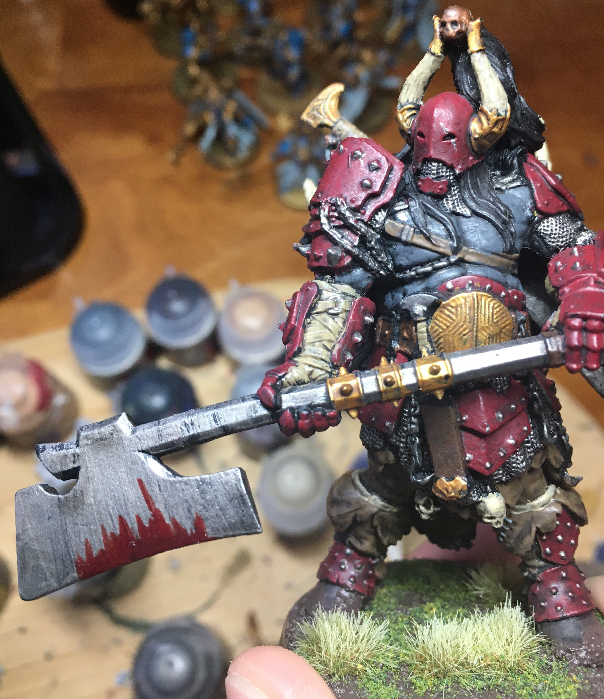
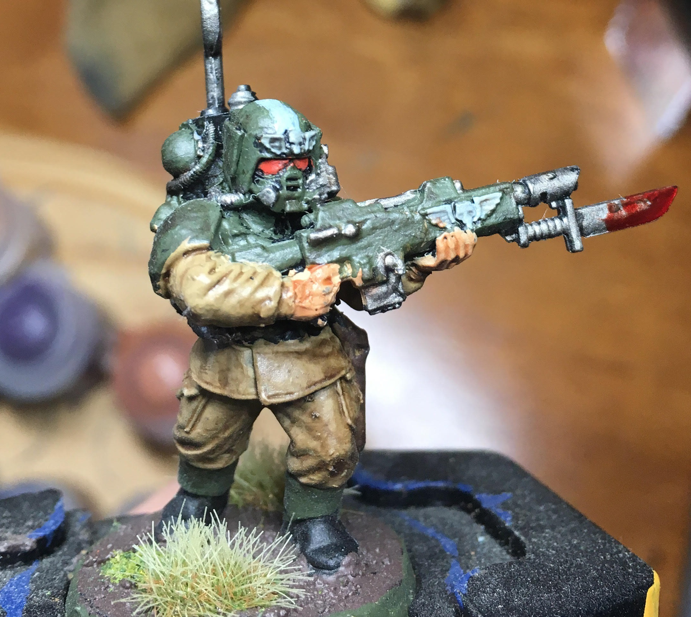

I enjoy spending my free time painting tiny figurines for a variety of games I play that utilize them. For example, in 'Dungeons and Dragons', the miniatures are markers for each individual player character and are chosen and painted to match their pictured appearance. Another game I paint miniatures for is 'Warhammer 40k', where vast armies of up to hundreds of models are organized on to huge tables with tanks, aircraft and more. 'Warhammer 40k' is a vast strategy game in which a match could take up to five hours of measuring distances and rolling die.
Painting is a calming hobby (although straining on the eyes) where I am rewarded with something physical that I am proud of and able to share in person and online, along with learn painting and modelling tips from a large online community. Ever since I was a kid, dioramas and train tables always interested me with their amount of detail. Now that passion has evolved into the painting of armies and building of cities all made by me and able to fit on a desk. I have even come far enough to participate in local model painting compititions, and after all, a good hobby is meant to bring people who have similar passions together.
